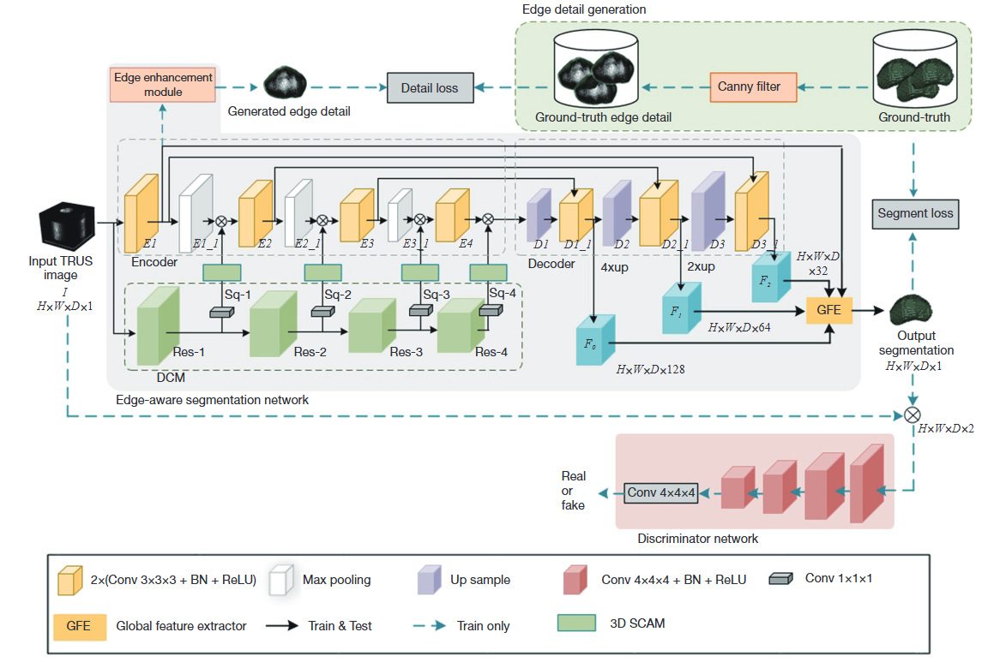

Portfolio
The following page showcases some of my papers and projects worked on by me over the last few years.

Healthcare AI · Clinical Workflow
Prostate Contouring & Review Platform
From 3D ultrasound segmentation research to a human-in-the-loop clinical AI workflow.
Developed through a collaboration between Nanchang Hangkong University and The First Affiliated Hospital of Nanchang University, this platform brings 3D prostate segmentation into an operational clinical workflow. It is used at the hospital to generate initial contours, support quality-aware review, and assist clinicians through an LLM-enabled interaction and documentation layer.
01
The Clinical Challenge
Accurate prostate delineation in 3D transrectal ultrasound is important for diagnosis, treatment planning, and follow-up, but ambiguous boundaries, speckle noise, and heterogeneous intensities make consistent contouring difficult. Manual delineation also adds time and introduces variability between reviewers.
This deployed workflow combines a specialized segmentation model with an LLM clinical copilot. The model produces a boundary-aware initial contour; the copilot brings together case context, quality-control findings, institutional knowledge, and documentation support to help clinicians review the result and support diagnostic decision-making. Clinicians retain final control.
02
What the Platform Does
Automated 3D Contouring
Generates an initial prostate contour from 3D transrectal ultrasound volumes using the boundary-aware 3D EAGAN model.
Quality-Aware Review
Surfaces uncertainty and quality signals so reviewers can focus attention on regions most likely to require correction.
Clinician-in-the-Loop
Keeps contour approval, editing, and final clinical decisions with the clinician while preserving an auditable review trail.
LLM Clinical Copilot
Organizes case context, retrieves relevant guidance, explains QA findings, and assists with structured clinical documentation.
03
How It Works
The platform separates perception, verification, review, and clinical output into modular components that can be inspected and improved independently.
Clinical Data
3D TRUS volumes and available case context enter a controlled clinical data pipeline.
3D Segmentation
3D EAGAN generates an initial boundary-aware prostate segmentation.
Uncertainty & Quality Control
Automated checks identify uncertain areas and potentially inconsistent outputs for focused review.
Clinician Review
Clinicians inspect, edit, and approve the contour with contextual assistance from the LLM copilot.
Clinical Output
The approved contour and structured record are exported with review history and audit information.
04
Human-AI Collaboration
The platform is designed for augmentation, not autonomous diagnosis. Each layer has a clear role:
AI generates → QA highlights → Clinician reviews → System records
Approved corrections can enter a controlled feedback loop for error analysis and future model improvement, while access controls and audit logs keep clinical responsibility visible.
05
Research Foundation: 3D EAGAN
3D EAGAN: 3D edge-aware attention generative adversarial network for prostate segmentation in transrectal ultrasound images
3D EAGAN learns volumetric context while explicitly strengthening edge information, helping the model recover prostate boundaries that are difficult to distinguish in ultrasound. The method was evaluated on an in-house clinical dataset and the public μRegPro dataset.
Research collaboration. The work was completed with researchers from Nanchang Hangkong University and clinical collaborators at The First Affiliated Hospital of Nanchang University, connecting model development with real review requirements.
Read Publication- Dice
- 90.06%
- Jaccard
- 84.11%
- Hausdorff Distance
- 4.58 mm
- Precision
- 90.58%
- Recall
- 89.24%

06
System Architecture
Core AI
3D EAGAN · PyTorch · 3D Medical Image Segmentation · Test-Time Augmentation · Uncertainty Estimation
Medical Imaging & Interoperability
DICOM · Clinical Image Processing · Structured Segmentation Output
Backend
Python · FastAPI · PostgreSQL
Clinical Workflow
Automated QA · Human-in-the-Loop Review · Audit Logging · Controlled Feedback Loop
LLM & Knowledge Layer
LLM · RAG · Tool Calling · Clinical Workflow Assistance
07
Design Principle
Specialized models perceive.
Quality-control systems verify.
LLMs organize and explain.
Clinicians decide.
The goal is not a single autonomous model, but a human-centered and reliable workflow in which each component has a bounded, inspectable responsibility.
Master of Computer Technology
Nanchang Hangkong University, School of Information Engineering
September 2020 – June 2023
Master's degree program, GPA: 3.45 (4.0)
Key Courses: Deep learning, Machine learning, Matrix theory, Pattern recognition, Natural language processing
Bachelor of Internet of Things
Nanjing University of Information Science and Technology (Graduated with honors)
September 2016 – June 2020
Bachelor's degree program, GPA: 3.47 (4.0)
Key Courses: Data structure, Computer networks, Operating system, Principles of computer composition
Research Interests
- Applied AI & Intelligent Systems
- Multimodal AI
- LLM & Agentic AI Systems
- Human-in-the-Loop & Reliable AI
SPIE Medical Imaging
ADC-Net: Adaptive detail compensation network for prostate segmentation in 3D transrectal ultrasound images
Introduces a 3D TRUS prostate-segmentation network that compensates for fine detail lost during encoder downsampling, improving boundary-sensitive volumetric segmentation.
Quantitative Imaging in Medicine and Surgery
3D EAGAN: 3D edge-aware attention generative adversarial network for prostate segmentation in transrectal ultrasound images
Combines detail compensation, 3D spatial-channel attention, edge enhancement, and adversarial learning to produce more accurate prostate boundaries in challenging TRUS volumes.
IET Image Processing
CPDINet: Blind image quality assessment via a content perception and distortion inference network
Separates image-content perception from distortion inference, then adaptively fuses both feature streams for no-reference image quality prediction.
OSF Preprints
Urban Legends or Mass Memory? An Exploratory Study of the “Miniature Flying Craft” Myth in 20th Century China
Examines recurring memories of “miniature flying craft” in late-20th-century China and proposes the Narrative-Induced Visual Myth framework for understanding how shared narratives can shape collective visual memory.